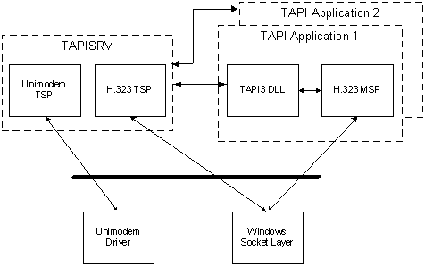

TAPI applications reside in their own process space. TAPI applications load the Tapi32.dll or Tapi3.dll into their process, and TAPI communicates with TAPISRV through a private RPC interface. A TSP runs in the context of TAPISRV. A given TSP may reside on a machine other than the user's machine and is accessed using a remote TSP. TAPISRV is implemented as a service process within SVCHOST. An MSP lives within the process space of the application and is always local.
A TSP/MSP pair can be regarded as having a virtual private communication path. Information can be sent between the two using opaque buffers that are not interpreted by either TAPISRV or the TAPI DLL.
Some service providers implement operations specific to the hardware involved. TAPI 2.x provides access to such operations through the lineDevSpecific or phoneDevSpecific function. TAPI 3.x exposes provider-specific Interfaces.
The following diagram illustrates the flow of controls and information, showing one stand-alone TSP (Unimodem) and one TSP/MSP pair (H.323).

The following diagram illustrates the progress of an incoming call that involves both a TSP and an MSP.
The application may then use methods such as ITStream::SelectTerminal to complete preparations for call completion.
After the call is in progress, the TSP and the MSP communicate by passing opaque buffers through TAPISRV and TAPI3.
The exact process and content of communication between service providers is specific to a given TSP/MSP set.
[!Note]
For outgoing calls, the MSP typically knows about the call before the TSP. If the MSP tries to communicate with the TSP before the TSP is informed about a call, the communication will fail. When the MSP and the TSP need to exchange information concerning a specific call, the TSP should initiate communication.
Â
Â
Â